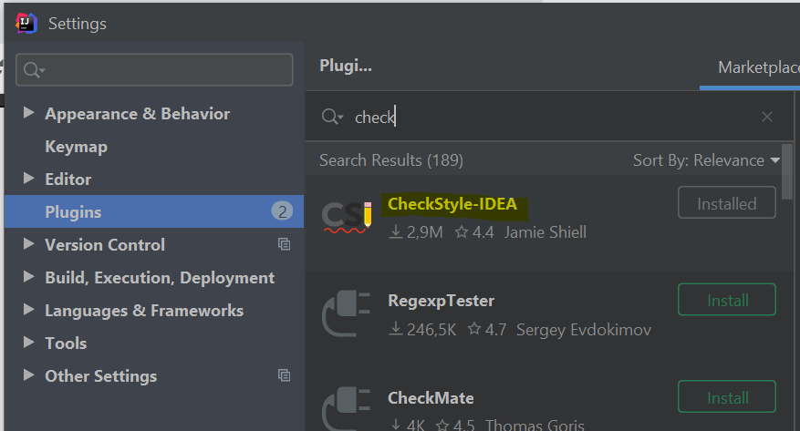
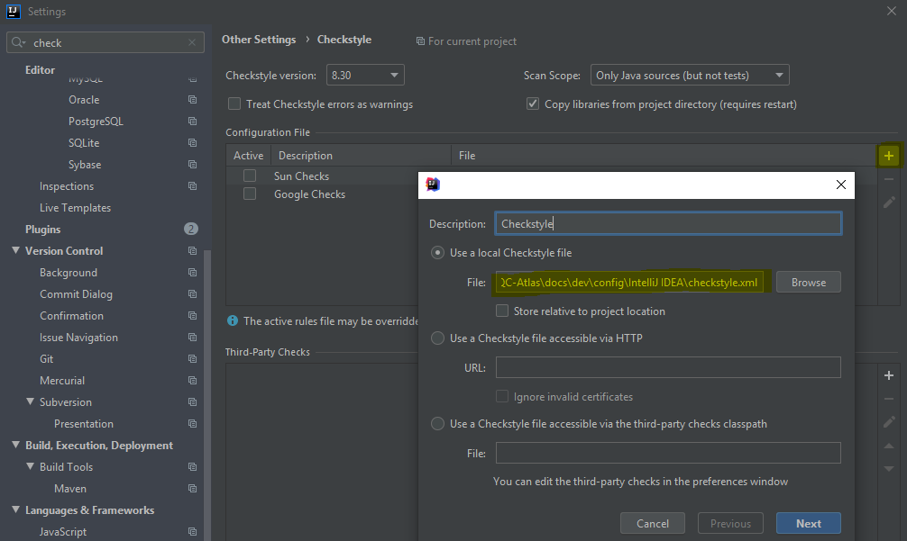
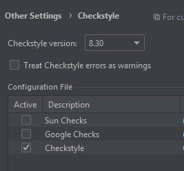
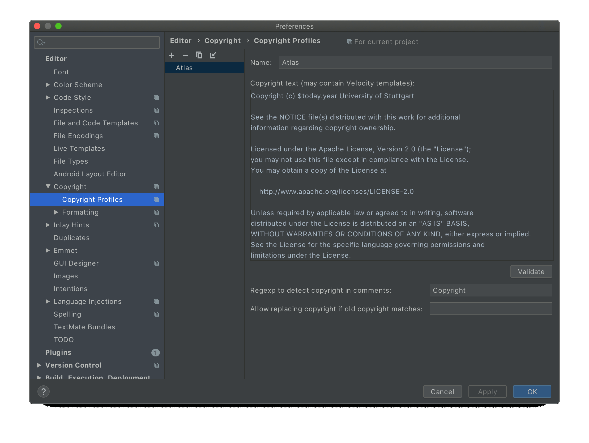
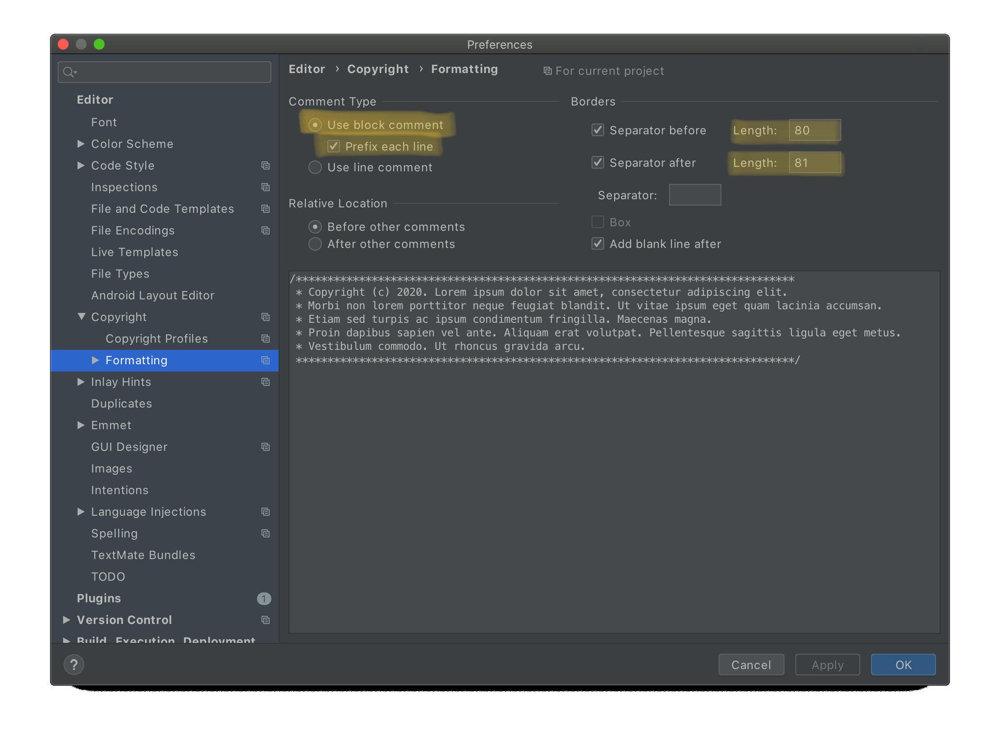

IntelliJ Setup
- At start of IntelliJ, browse to the root
pom.xmland open it as project. - Enable checkstyle:
-
Install the IntelliJ CheckStyle-IDEA Plugin. It can be found via plug-in repository
(File > Settings > Plugins > Marketplace; Mac: IntelliJ IDEA > Preferences > Plugins > Marketplace).

-
Install the CheckStyle-IDEA Plugin, click "Apply" and restart the project upon request.
- Repeat the previous steps for the Lombok Plugin
- Open the Settings (by pressing Ctrl + Alt + S; Mac: command + ,)
- Go to "Other Settings > Checkstyle".
-
Click on "+" under Configuration File and add
checkstyle.xml. It can be found here. Confirm.
-
Activate the settings and confirm:

-
Configure the code style (Source: https://youtrack.jetbrains.com/issue/IDEA-61520#comment=27-1292600)
- Open the Settings (by pressing Ctrl + Alt + S; Mac: command + ,)
- Go to "Editor > Code Style"
- Click on the gear icon (right of "Scheme:")
- Click "Import Scheme"
- Choose "IntelliJ IDEA code style XML"
- Navigate to
intellij-idea-code-style.xml. It is located in here. - Click "Apply"
- Click "OK"
-
Click "Close"
-
Setup code headers to be inserted automatically

- Open the Settings (by pressing Ctrl + Alt + S; Mac: command + ,)
- Go to "Editor > Copyright > Copyright Profiles"
- Click the "+"
- Name "Atlas"
- Copyright text from CodeHeaders
- Click "Apply"
- Go to "Editor > Copyright > Formatting"
-
Adjust copyright formatting settings

- Change toUse block commentswithPrefix each line- SetRelative LocationtoBefore other comments- SetSeparator beforeto80andSeparator afterto81- Go to "Editor > Copyright" - Set "Atlas" as Default project copyright - Click "Apply" -
Configure Git to handle line endings
- Insert the following commands in your console:
For Windows:git config --global core.autocrlf true
For Mac/Linux:git config --global core.autocrlf input